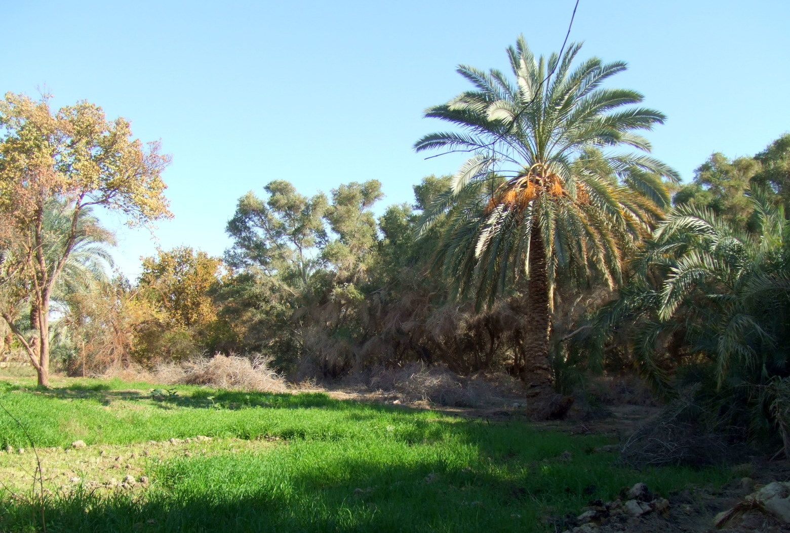
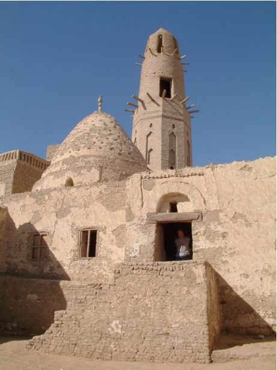
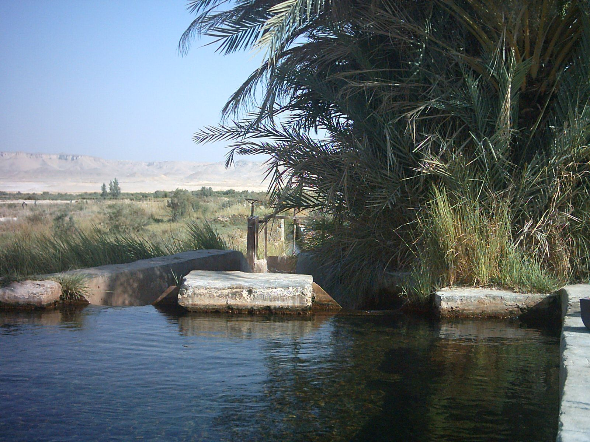
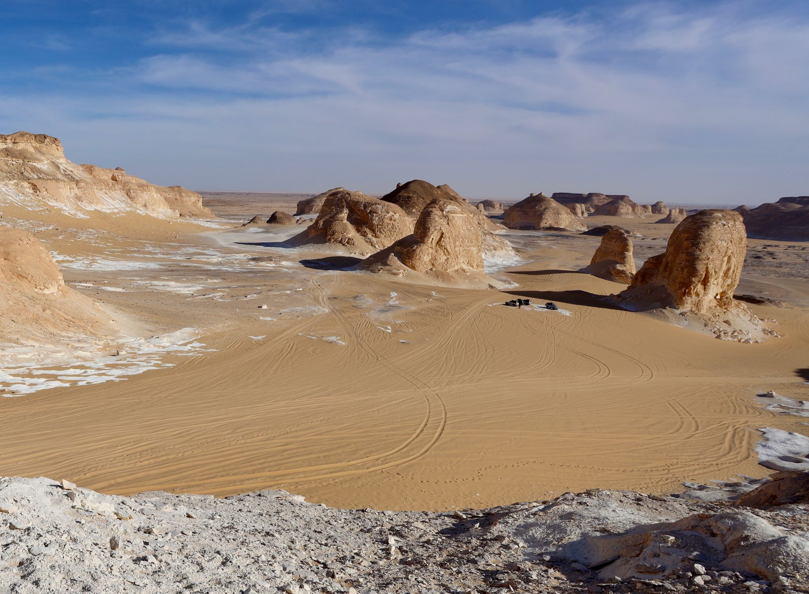

Rutas porel Desierto Líbico.
Pensadas para que cada viajero viva la esencia del paisaje: itinerarios flexibles, desde un solo día hasta viajes de varias semanas, entre los oasis y el Gran Mar de Arena.
Lo que incluyecada ruta.
Los mismos estándares tanto si viajas un día como tres semanas.
Itinerarios flexibles
Desde excursiones de un día hasta viajes de varias semanas, según tus fechas y tu ritmo.
Acampadas bien elegidas
Abrigo del viento, horizonte despejado y la mejor luz al principio y al final del día.
Seguridad en cada vehículo
Navegación GPS y teléfono satélite en todos nuestros 4×4.
Guías y conductores beduinos
La gente que mejor conoce estas pistas guía cada expedición.
Visitas a oasis
Siwa, Bahariya, Farafra y Dajla: manantiales, palmerales y pueblos.
Yacimientos arqueológicos
Templos, necrópolis y fortalezas, muchos fuera de los circuitos habituales.
Aventura entre los oasisy el Gran Mar de Arena.
En 4×4, en camello o a pie. Combina las tres como prefieras.
Travesías off-road por el Gran Mar de Arena, saliendo de Bahariya e incluyendo las formaciones rocosas del Desierto Blanco.

- 01Travesías del Gran Mar de Arena
- 02Desierto Blanco y Montaña de Cristal
- 03Conductores beduinos con experiencia
- 04GPS y teléfonos satélite
- 05Acampadas bajo las estrellas
- 06Noches en Sand Gate Camp
Viajes lentos por las antiguas pistas de caravanas, al ritmo con el que siempre se cruzó el desierto.

- 01Pistas históricas de caravanas
- 02Camelleros tradicionales
- 03Etapas cortas y tardes largas
- 04Grupos pequeños
- 05Vehículo de apoyo si lo necesitas
- 06Combinable con días en 4×4
Rutas a pie hasta cañones, arte rupestre como los petroglifos y ruinas de fortalezas de época romana.

- 01Cañones y mesetas
- 02Petroglifos y arte rupestre
- 03Ruinas de fortalezas romanas
- 04Equipaje en vehículo
- 05Distancias adaptadas al grupo
- 06Paseos centrados en la arqueología
Oasis yarqueología.
Palmerales, fuentes termales, aldeas de adobe, tumbas excavadas en la roca y templos olvidados: las pausas que dan sentido a cada ruta.







Eligetu ruta.
Dos grandes travesías de 11 días desde El Cairo, o una ruta diseñada para ti.

Cairo – Kharga
Bahariya, Farafra, Dajla y Kharga: Desierto Blanco, Gran Mar de Arena y las fortalezas romanas del sur.

Cairo – Fayoum
Bahariya, Farafra y Fayoum: la cueva de Djara, las dunas de Abu Muharriq y Wadi Hitan.

A medida
Salidas privadas, viajes fotográficos, trekking o caravanas de camellos. Cuéntanos lo que imaginas.
Para reservar,habla con nosotros.
No hay reservas automáticas: cada expedición se prepara a medida. Cuéntanos fechas, número de viajeros y cómo te gusta viajar, y te respondemos personalmente con disponibilidad y presupuesto.
Atención para reservas de 08:00 a 20:00 (hora de Egipto). ¿Prefieres un formulario? Ir a contacto